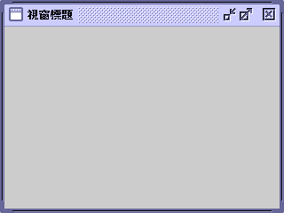

Steel Theme
Java SE 5.0 時，推出新的 Metal 風格，叫做 Ocean Theme，較為明亮。J2SE 1.4 時，Metal 風格叫做 Steel Theme，比較暗沉，而且元件的層次之間沒什麼立體感，辨識度較差。
由於 Java SE 5.0 開始將 Ocean 做為 Metal 風格的預設主題，因此如果你想切換回 Steel 主題，程式碼如下：

Java SE 5.0 時，推出新的 Metal 風格，叫做 Ocean Theme，較為明亮。J2SE 1.4 時，Metal 風格叫做 Steel Theme，比較暗沉，而且元件的層次之間沒什麼立體感，辨識度較差。
由於 Java SE 5.0 開始將 Ocean 做為 Metal 風格的預設主題，因此如果你想切換回 Steel 主題，程式碼如下：
